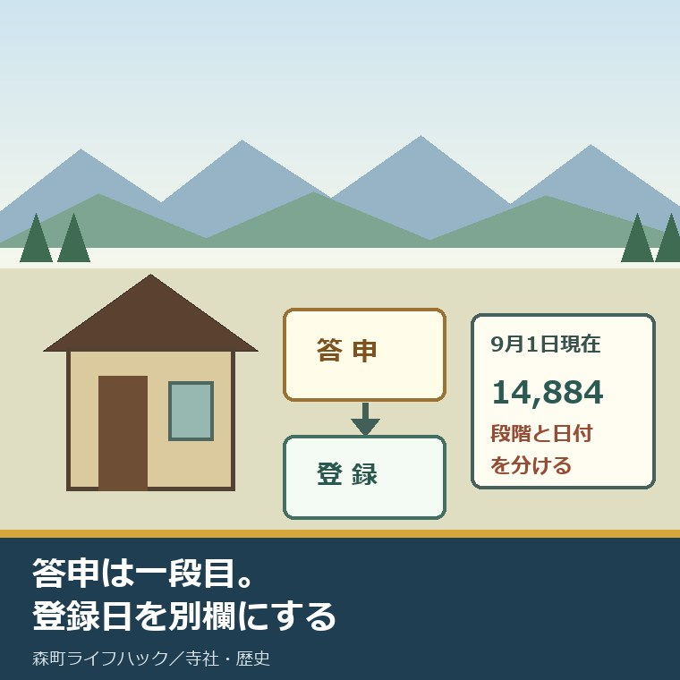
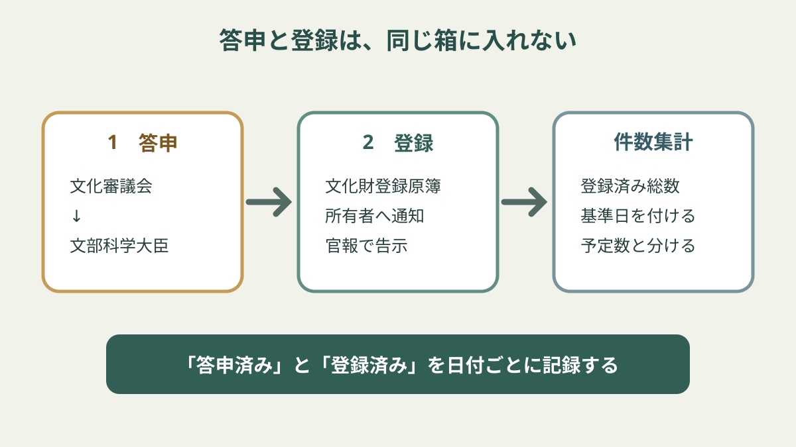
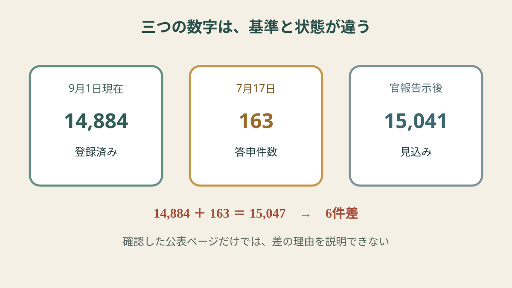

文化財の答申と登録の違い｜森町で見る2段階

この記事の結論
Q. 文化財の「答申」が出たら、その建物は登録済みですか。
A. 答申と登録は同じ日付、同じ状態ではありません。答申は文化審議会が文部科学大臣へ示す審議結果、登録は大臣が文化財登録原簿へ載せる段階です。2026年7月17日の発表は163件を答申し、官報告示後に建造物15,041件となる見込みでした。一方、文化庁の2026年9月1日現在の登録数は14,884件です。数字には必ず段階と基準日を添えます。所有者は相談・調査・答申・登録を一枚に並べ、日付と確認先を書いて家族へ共有してください。答申時点で修理や公開方法まで決まるわけではありません。
森町の古民家を残すか迷い、登録有形文化財を調べる。そこで「文化審議会が答申」「登録有形文化財は1万5千件」という記事を読むと、答申の日に登録が決まったように見えます。
しかし文化庁の公表文は、「答申」と「官報告示後に登録有形文化財となる予定」を分けています。見出しを短くするほど、この間が消えます。
2026年7月17日の答申は、新たに建造物163件を登録するよう文部科学大臣へ答申したものです。発表は、官報告示後の登録建造物が15,041件になる予定としました。
ところが、文化庁の指定等の件数一覧では、2026年9月1日現在の登録有形文化財、建造物は14,884件です。どちらも文化庁の数字ですが、基準日と段階が違います。
意外なのは、最新の日付の実数が、先に発表された見込みより小さいことです。数字だけを横に並べると矛盾に見えます。
この記事は、その差を推測で埋めません。答申、登録、集計基準日を分け、森町の建物所有者が次に何を確認するかへ戻します。
対案・結論｜答申は意見、登録は登録原簿への記載
文化審議会は、候補となる建物を調査・審議し、登録することが適当だという結果を文部科学大臣へ答申します。これが一段目です。
その後、文部科学大臣が文化財登録原簿へ登録します。これが二段目です。文化庁は所有者への通知と官報での告示を伴う仕組みとして案内しています。
したがって、答申日のニュースを紹介するときは「登録された」と過去形にせず、「登録するよう答申された」「官報告示後に登録となる予定」と書きます。
| 段階 | 主体 | 公表文で確かめる言葉 | 所有者が言える状態 |
|---|---|---|---|
| 1 答申 | 文化審議会から文部科学大臣へ | 「登録するよう答申」 | 登録候補として答申された |
| 2 登録 | 文部科学大臣 | 登録原簿、通知、官報告示、登録件数の基準日 | 登録有形文化財である |
| 別の数字 集計 | 文化庁 | 「何年何月何日現在」 | その基準日時点の登録済み総数 |

日常の言葉では、答申を「決まった」と要約することがあります。けれど、所有者が税、改修、売却、公開の判断をするときは、要約では足りません。
登録証や通知を受け取る前に、登録済みを前提として工事や契約の説明を進めないことが大切です。個別の効力がいつ生じるかは、町と文化庁へ確認します。
逆に、答申を軽く見る必要もありません。専門的な調査と審議を通過した重要な節目です。ただし、節目の名前を正確に呼びます。
この二段階を一枚へ書くだけで、家族、買い手、工事会社、行政担当の間で、「もう登録されたのか」という行き違いを減らせます。
良い点｜登録制度は使い続ける建物を想定している
登録有形文化財の建造物は、原則として建設後50年を経過し、歴史的景観への寄与、造形の規範、再現の難しさのいずれかに当たるものが対象です。
築50年を超えれば自動登録されるわけではありません。一方、城や大寺院だけに限る仕組みでもありません。住宅、店舗、倉庫など、地域の暮らしを伝える建物も対象になり得ます。
登録制度の良い点は、指定文化財より緩やかな保護を意図し、建物を使いながら残す道を用意していることです。残すことと、暮らしや事業で使うことを最初から敵同士にしません。
森町公式の「文化財」ページは、町内の指定文化財を種類別に案内しています。「民家」ページは友田家住宅などの建築を通じ、住宅も地域史の資料になることを示します。
ただし、森町公式ページに載る指定文化財と、国の登録有形文化財は同じ区分ではありません。町内の古い建物を見つけても、掲載されているから登録済みとは判断しません。
森町の古建築活用を藤江家と旧郡役所で比べた記事では、残す建物を飲食・催事へ使う方法と、資料館として使う方法を分けています。
建物の価値と、使い方、所有者負担は別々に確認します。登録という肩書だけでは、雨漏りも、耐震も、空調も、管理人も解決しません。
それでも、建築年、意匠、地域との関係を調べる過程は、売るか残すか決める前の資料になります。登録に至らなくても、調査記録は無駄になりません。
14,884件、163件、15,041件は単純な足し算にならない
2026年9月1日現在の登録建造物は14,884件です。これは文化庁の指定等件数一覧に載る、基準日付きの登録済み件数です。
2026年7月17日の報道発表は、新たな答申を163件、官報告示後の見込みを15,041件としました。
15,041件から14,884件を引くと157件です。答申163件とは6件違います。また14,884件へ163件を足すと15,047件で、15,041件にはなりません。
この6件を、取り消し、滅失、集計ミスなどと決めつける根拠は確認できませんでした。二つの公表は基準日が違うため、単純加算で説明しないのが安全です。
所有者にとって大事なのは、数字の差を埋める推理より、自分の建物がどの段階にいるかを確かめることです。相談前、調査中、答申後、登録後では、家族へ説明する言葉も次にそろえる資料も変わります。
件数表を家族会議の根拠に使うなら、画面の数字だけでなく、ページ名と基準日も一緒に控えます。あとで件数が更新されても、「どの時点の何を見て判断したか」が残れば、後継の家族や管理を引き継ぐ人が経緯を追えます。

全国14,884件を47都道府県で単純平均すると約317件です。ただし、地域ごとの件数差を無視した目安であり、森町の件数を示す数字ではありません。
1万件を超える規模は、制度が広く使われていることを示します。しかし全国件数が多いから、森町の一軒が登録されやすいとは言えません。
所有者に必要なのは全国順位ではなく、自分の建物について、建築年、改変、意匠、地域との関係、所有者同意がそろうかです。
数を紹介するときは、「2026年9月1日現在、登録済み14,884件」と一息で書きます。日付を切り落とした「いま1万5千件」は使いません。
森町で見る2段階｜地域計画の認定とは別の手続き
森町文化財保存活用地域計画は、文化審議会の答申を経て、2026年7月17日に文化庁長官の認定を受けました。答申と認定を分ける点では似ていますが、建造物を登録する手続きとは別です。
森町文化財保存活用地域計画が2026年7月に認定された意味では、町全体の計画と個別文化財の決定を分けています。
地域計画が認定されたから、森町の古民家が一括で登録有形文化財になるわけではありません。所有者が建物の登録を考える場合は、個別の調査と手続きを進めます。
最初に集めるのは、建築年が分かる棟札、登記、固定資産関係の資料、古写真、家族の記録です。日付が一致しなくても捨てず、資料ごとの出典を書きます。
次に、増築、減築、屋根替え、外壁、建具、用途変更の履歴を年表にします。「古いまま」ではなく、どこを変え、どこが残ったかを示します。
写真は正面だけでなく、四方向、屋根、基礎、主要室、特徴的な建具を撮ります。危険な床下や屋根へ自分で入らず、見られる範囲に限ります。
所有者、共有者、使用者、管理者が違う場合は、氏名と連絡先を分けます。登録の相談をする人と、決める権限を持つ人を混同しません。
その一式を持ち、森町社会教育課文化振興係へ相談します。文化財にしたいという結論を押しつけず、「登録の可能性を調べるため、次に必要な資料を教えてほしい」と聞きます。
森町の古民家を登録有形文化財にする条件では、築年数、三つの基準、改修や費用の確認点を所有者向けにまとめています。
注文したい点｜発表には状態と基準日を並べてほしい
文化庁の報道発表は「答申」「官報告示後の予定」を書き分けています。元資料まで読めば、二段階は確認できます。
ただ、検索結果や二次的な見出しでは「163件を登録」「合計15,041件」と短くなり、答申が消えやすい構造です。
私が注文したいのは、件数の横へ「答申済み」「登録済み」「基準日」の三つを常に置くことです。数字を大きく見せるより、状態を一語足す方が所有者に役立ちます。
9月1日現在14,884件という一覧にも、直近の答申が未反映なら、その旨と次の更新予定があると差を読みやすくなります。ただし、未反映が差の理由だとは確認できていません。
森町側の相談案内にも、相談、調査、提案、答申、登録という進み方と、各段階で所有者が確認する書類が一枚にまとまると動きやすくなります。
行政の担当者へ全ての調査を求めるのではありません。所有者が用意する資料と、町が確認する資料の境界が見えれば、往復を減らせます。
大石の視点｜答申を決定と言い換えない
古い建物の所有者は、登録の話が出る前から、固定資産税、草刈り、雨漏り、火災保険、修理、空き家管理を負担しています。まず、その努力を認める必要があります。
登録を勧める側が歴史的価値だけを語り、維持費と使い道を所有者へ残せば、話は続きません。担い手、後継、修理費、用途、売却の自由を同じ机へ置きます。
答申を登録済みと数えるのは、相談を許可と数えるのと同じくらい雑です。一語の省略が、所有者の判断時期を狂わせます。
私は、登録を急ぐことより、家族の中で「何が決まり、何がまだか」を一致させることを先にしたいと考えます。
登録されれば絶対に売れない、自由に直せない、修理費が全額出る、といった極端な理解も避けます。個別の届出、支援、契約条件は担当窓口と専門家へ確認します。
正直、1万5千件という大きな数字は、制度が身近になった証拠として使いたくなります。しかし14,884件という後日の実数を見た以上、都合の良い見込みだけを見出しに残せません。
数がずれたときは、どちらかを消すのではなく、両方の日付と状態を書く。それが、古い建物を残すか迷う人へできる最低限の説明です。
打開に必要な具体名詞は、建築年資料、修理履歴、共有者、維持費、使い道です。登録の肩書を話す前に、この五つの空欄を減らします。
今日できる小さな一歩
今日できることは、建物の資料ファイルの表紙へ、二つの空欄をつくることです。
一つ目に「答申日」、二つ目に「登録日・確認資料」と書きます。まだ何も進んでいなければ「未相談」と書いて構いません。
ニュースを保存している場合は、見出しだけでなく文化庁のURL、公表日、答申件数、官報告示後の見込みを書き写します。
この一枚があれば、家族へ説明するときに「決まったらしい」で終わらず、次に町へ何を聞くかを具体化できます。
まとめ
答申は文化審議会から文部科学大臣への審議結果、登録は大臣が文化財登録原簿へ載せる段階です。答申された建物を登録済みとは呼びません。
2026年7月17日は答申163件、官報告示後の見込み15,041件。2026年9月1日現在の登録建造物は14,884件です。6件差の理由は確認できていません。
森町の所有者は、建築年と修理履歴を一つのファイルにし、答申日と登録日の欄を分けます。今日の一歩は、二つの空欄を書いた表紙をつくることです。
よくある質問
Q1. 文化財の答申と登録は何が違いますか。
A1. 答申は文化審議会が調査・審議した結果を文部科学大臣へ示す段階です。登録は、その後に文部科学大臣が登録有形文化財を文化財登録原簿へ登録する段階です。文化庁の報道発表も、答申件数と官報告示後の見込み件数を分けています。
Q2. 答申された建物を登録済みと呼んでよいですか。
A2. 登録前なら、登録済みとは呼びません。「2026年7月17日に登録するよう答申された」「官報告示後に登録有形文化財となる予定」のように段階と日付を書きます。登録済み件数を示すときは、文化庁の集計基準日も添えます。
Q3. 森町の古民家を登録したい所有者は何から始めますか。
A3. 建築年が分かる棟札・登記・古写真、増改築と修理の記録、外観と内部の写真、配置図、所有者と管理者の連絡先を一つのファイルにします。登録を自己判断せず、森町社会教育課文化振興係へ相談し、調査と手続きの順番を確認してください。
文化財の件数、登録日、登録基準、現状変更の届出、税や支援の扱いは変わる場合があります。個別の建物について、森町の文化財担当、文化庁、建築・税務・法律の専門家へ確認してください。
参考にした公式情報
- 文化財指定等の件数／文化庁（登録有形文化財の建造物14,884件、2026年9月1日現在を2026年9月9日に確認）
- 登録有形文化財（建造物）／文化庁（制度の趣旨、登録原簿、登録基準を2026年9月9日に確認）
- 文化審議会の答申（登録有形文化財・建造物）／文化庁（2026年7月17日の答申163件、官報告示後15,041件の見込みを2026年9月9日に確認）
- 森町文化財保存活用地域計画／静岡県森町（2026年7月17日の認定を2026年9月9日に確認）
- 文化財／静岡県森町（町内文化財の区分と案内を2026年9月9日に確認）
- 民家／静岡県森町（住宅建築も地域史の資料になる例を2026年9月9日に確認）

磐田市で小さな不動産業を営みながら、森町の空き家・農地・実家じまいのご相談を受けています。地域と不動産実務をつなぐ目線で、確認の順番まで具体的に書きます。
最終確認日：2026-09-09 ／ 本記事は公表情報と執筆者の見解を分けています。14,884件、答申163件、見込み15,041件の差は、確認した公式ページで理由を特定できなかったため推測していません。